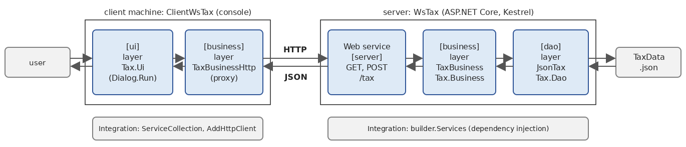

13. Web 服务
13.1. 简介
在上一章中，我们介绍了几个 TCP/IP 客户端/服务器应用程序。由于客户端和服务器交换的是文本行，因此它们可以用任何语言编写。客户端只需了解服务器所期望的通信协议即可。
Web 服务也是（TCP/IP）服务器应用程序。它们具有以下特点：
- 它们由 Web 服务器托管，客户端与服务器之间的交换协议是 HTTP（超文本传输协议），这是建立在 TCP/IP 之上的协议，我们在上一章中已对其进行过探讨；
- Web 服务具有标准的通信协议，与所提供的服务无关。一个 Web 服务提供多种服务：S1、S2……Sn。其中每个服务都需要客户端提供参数，并向客户端返回结果。对于每个服务，客户端需要知道：
- 如何指定服务 Si；
- 需要提供的参数列表及其类型；
- 服务返回的结果类型。一旦知道了这些要素，无论查询的是哪个 Web 服务，客户端与服务器的对话都遵循相同的格式。这使得客户端通信标准化；
- 为了防御来自互联网的攻击，许多组织只对外开放其服务器上的某些端口：Web 服务主要是 80（HTTP）和 443（HTTPS）端口。所有其他端口都被锁定。因此，上一章所描述的那类客户端/服务器应用程序通常仅限于组织的私有网络（内部网）。把服务托管在 Web 服务器上，则可使整个互联网社区都能访问它；
- Web 服务可以被看作一个远程对象：它所提供的服务于是成为该对象的方法。客户端可以像使用本地对象一样使用这个远程对象，方法是通过一个称为代理的中间对象，它隐藏了所有的网络通信。这使我们能够构建一个与该层无关的客户端：如果该层发生变化，客户端的其余部分无需修改；
- 与上一章中的 TCP/IP 客户端/服务器应用程序一样，客户端和服务器可以用任何编程语言编写。它们交换由两部分组成的文本行：HTTP 协议所要求的头部，以及消息正文，其格式由客户端与服务器约定。
基于 Web 服务的客户端/服务器应用程序的架构如下：

这是对第 6 章中分层架构的扩展，并加入了专门的网络通信层：客户端一侧的 Web 服务客户端，以及服务器一侧的 Web 服务本身。我们在上一章的 TCP 税款计算服务器（第 8 版）中已经见过类似的架构。
13.1.1. 过去：SOAP 与 WSDL
2008 年，本课程使用的是 .NET Framework 的 SOAP Web 服务：用 Visual Web Developer 创建的 [.asmx] 文件，其公共方法用 [[WebMethod]] 特性标记。客户端发送一个 HTTP POST 请求，其正文是 SOAP（简单对象访问协议）格式的 XML 文档：一个包含方法名及其参数的“信封”。服务器以另一个包含结果的 XML 信封作出响应。每个服务都由一个 WSDL 格式（Web 服务描述语言）的 XML 文档来描述，该文档可在服务的 URL 后面加上 [?WSDL] 获得：它列出了方法、其参数及类型。基于该文档，工具（Visual Studio 中的“添加 Web 引用”向导，Java 中的 [wsimport] ）会自动生成服务代理。这项技术及其后继者 WCF（Windows Communication Foundation）在 2000 年代曾被广泛使用。它们如今已被弃用：.NET（Core）中既没有 ASMX，也没有 WCF 的服务器端组件，只有社区移植版 CoreWCF，用于迁移遗留应用程序。停用的原因在于 XML 和 SOAP 信封过于繁琐、相关标准（WS-Security、WS-Addressing 等）过于复杂，以及很难从浏览器调用这些服务。
13.1.2. 今天：REST 与 JSON
当前大多数 Web 服务遵循 REST 风格（表述性状态转移），并交换 JSON 文档（JavaScript 对象表示法，第 5 章已介绍）。REST 风格基于以下原则：
- 服务公开 资源，每个资源由一个 URL 指定：[/tax]、[/clients/12]、[/clients/12/orders]；
- 这些资源通过 HTTP 协议的 方法 （也称为动词）来访问，每个方法都有特定的含义；
- 操作的结果由响应中的 HTTP 状态码 指示；
- 请求和响应的正文通常是一个 JSON 文档，它比 XML 更紧凑、更简单；
- 服务是 无状态的：每个请求都包含处理它所需的全部信息；对于某个给定的客户端，服务器不会在两次请求之间保存任何信息。
最常用的 HTTP 方法如下：
方法 | 用途 | 示例 |
GET | 读取资源；任何参数都在 URL 中 | GET /clients/12 |
POST | 创建资源或请求处理；数据在请求正文中 | POST /clients |
PUT | 替换资源 | PUT /clients/12 |
PATCH | 修改资源的一部分 | PATCH /clients/12 |
DELETE | 删除资源 | DELETE /clients/12 |
上一章介绍过的状态码，在这里才显示出它们的全部意义：
代码 | 含义 |
200 OK | 请求成功；响应正文包含结果 |
201 Created | 资源已创建；[Location] 头提供其 URL |
204 No Content | 请求成功；响应没有正文 |
400 Bad Request | 请求无效（缺少参数或参数无效等） |
404 Not Found | 请求的资源不存在 |
500 Internal Server Error | 服务器上发生了意外错误 |
REST 服务没有与 WSDL 对应的必需文档。不过，通常的做法是使用 OpenAPI 文档来描述它（以前称为 Swagger），其格式为 JSON 或 YAML，工具可以据此生成文档、测试页面和客户端。我们稍后再回到这一点。
最后，请留意由 Google 设计的 gRPC：服务的方法及其消息在 [.proto] 文件中描述，工具据此生成服务器和客户端，就像 WSDL 时代那样；消息以紧凑的二进制格式（Protocol Buffers）编码，并通过 HTTP/2 传输。gRPC 非常高效，在同一组织内部的服务之间通信时很受欢迎，但不适合浏览器。.NET 中通过 [Grpc.AspNetCore] 包使用它，我们不会使用该包。
13.1.3. ASP.NET Core 与最小 API
为了开发我们的 Web 服务，我们将使用 ASP.NET Core，即 .NET 的 Web 开发框架，更具体地说是它的 最小 API（Minimal API）（.NET 6，2021 年）：在这个框架中，一个 URL 和一个 HTTP 方法直接与一个 C# 函数（通常是 lambda）相关联。Web 服务器是 Kestrel，一个用 C# 编写并集成在应用程序中的 HTTP 服务器：无需像 2008 年使用 IIS（Internet Information Services）时那样安装单独的 Web 服务器。ASP.NET Core 是 [Microsoft.AspNetCore.App] 共享框架的一部分，该框架随 .NET SDK 一起安装：它不需要任何 NuGet 包。
Visual Web Developer 是 2008 年用来编写 Web 服务的 Microsoft 免费工具，现已不复存在：[dotnet] 命令就足够了，任何代码编辑器都可以使用（Visual Studio Code、Visual Studio、Rider）。
13.2. 第一个 Web 服务
我们将构建一个简单的客户端/服务器应用程序，其简化架构如下：

本章中的项目被归入一个名为 [13-web-services.slnx] 的解决方案中，它是使用以下命令创建的，这些命令在 [13-web-services] 文件夹中输入：
| > dotnet new web -n WsHello -o WsHello
> dotnet new console -n ClientWsHello -o ClientWsHello
> dotnet new web -n WsOperations -o WsOperations
> dotnet new console -n ClientWsOperations -o ClientWsOperations
> dotnet new web -n WsTax -o WsTax
> dotnet new console -n ClientWsTax -o ClientWsTax
> dotnet new sln --format slnx -n 13-web-services
> dotnet sln 13-web-services.slnx add WsHello ClientWsHello WsOperations ClientWsOperations WsTax ClientWsTax
|
这些项目已包含在课程资料中：ZIP 文件中的 [13-web-services] 文件夹包含解决方案和六个项目，它们是完整的，并已按本章所述作了修改。因此读者无需输入上面的命令（它们反正也会失败，因为这些文件夹已经存在）：这些命令演示了这些项目是如何创建的，以及如何创建你自己的项目。要运行提供的某个项目，只需进入其文件夹并键入 [dotnet run] （或在 Visual Studio 或 VS Code 中打开 [13-web-services.slnx]）。后面的 [dotnet add ... reference] 和 [dotnet add ... package] 命令也是如此：引用和包已经包含在提供的 [.csproj] 文件中。
[web] 模板来自 [dotnet new]，它创建一个空的 ASP.NET Core 应用程序项目。本章中的三个 Web 服务（[WsHello]、[WsOperations]、[WsTax]）使用该模板创建，它们的客户端则使用标准的 [console] 模板创建。由此得到如下目录结构（仅列出主要文件）：
| 13-web-services/
13-web-services.slnx
WsHello/ “Hello” web service
WsHello.csproj
Program.cs
appsettings.json
ClientWsHello/ its console client
ClientWsHello.csproj
Program.cs
WsOperations/ web service of the four operations
WsOperations.csproj
Program.cs
appsettings.json
ClientWsOperations/ its console client
ClientWsOperations.csproj
Program.cs
WsTax/ tax calculation web service (version 9)
WsTax.csproj
Program.cs
appsettings.json
wwwroot/
index.html the web client
ClientWsTax/ its console client (version 9)
ClientWsTax.csproj
TaxBusinessHttp.cs
Program.cs
ClientNode/ a JavaScript client
client-tax.mjs
|
13.2.1. 服务器端

由 [dotnet new web] 生成的项目文件 [WsHello.csproj] 如下：
| <Project Sdk="Microsoft.NET.Sdk.Web">
<PropertyGroup>
<TargetFramework>net10.0</TargetFramework>
<Nullable>enable</Nullable>
<ImplicitUsings>enable</ImplicitUsings>
</PropertyGroup>
</Project>
|
说明：
- 第 1 行：与控制台项目的唯一区别在于所使用的 SDK——[Microsoft.NET.Sdk.Web] 而不是 [Microsoft.NET.Sdk]。基于 Web 的 SDK 引用共享的 ASP.NET Core 框架，并把 ASP.NET Core 的命名空间添加到隐式的 [using] 命名空间中（[Microsoft.AspNetCore.Builder]、[Microsoft.AspNetCore.Http]、[Microsoft.Extensions.DependencyInjection]、[Microsoft.Extensions.Logging]……）；
- 没有 [OutputType] 这一行：Web 应用程序始终是可执行文件。
生成的程序 [Program.cs] 只有四条指令：
| var builder = WebApplication.CreateBuilder(args);
var app = builder.Build();
app.MapGet("/", () => "Hello World!");
app.Run();
|
- 第 1 行：[WebApplication.CreateBuilder] 为构建 Web 应用程序做准备：它读取配置（[appsettings.json] 文件、环境变量、命令行参数），设置日志记录，并配置我们在第 6 章中使用过的依赖注入容器。[builder] 允许你完成这一准备工作，例如在容器中注册服务；
- 第 2 行：构建应用程序；
- 第 4 行：HTTP 方法 [GET] 和 URL [/]（网站根）与一个 lambda 相关联。当服务器收到请求 [GET /] 时，它会执行该 lambda，并把结果（在这里是文本 [Hello World!]）发送给客户端；
- 第 6 行：启动 Kestrel 服务器；它等待请求，直到应用程序停止（Ctrl-C）。
模板还会创建三个配置文件：
- [appsettings.json]：应用程序配置；
- [appsettings.Development.json]：当应用程序在“Development”环境中运行时，用于覆盖 [appsettings.json] 中的值；
- [Properties/launchSettings.json]：供 [dotnet run] 和 Visual Studio 使用的“启动配置文件”。它们设置监听端口（由 [dotnet new] 随机选择，例如 5273）以及环境变量 [ASPNETCORE_ENVIRONMENT=Development]。
运行时环境（Development、Staging、Production）会改变应用程序的行为。特别是在 Development 环境中，未处理的异常会产生包含该异常全部细节（包括调用堆栈）的响应：这对开发人员有用，但在生产环境中会成为安全漏洞。为了使我们的结果与用户实际看到的一致，我们删除了 [launchSettings.json] 和 [appsettings.Development.json] （因此它们不在提供的项目中）：我们的服务在默认环境 Production 中运行。监听端口随后在 [appsettings.json] 中设置：
| {
"Logging": {
"LogLevel": {
"Default": "Information",
"Microsoft.AspNetCore": "Warning"
}
},
"AllowedHosts": "*",
"Urls": "http://localhost:5100"
}
|
- 第 2–5 行：日志记录：显示 [Information] 及以上级别的消息，但来自 ASP.NET Core 自身的消息（类别 [Microsoft.AspNetCore.*]）除外，它们仅限于警告（[Warning]）和错误；
- 第 8 行：请求的 HTTP [Host] 头中所接受的机器名称；[*] 表示接受所有名称；
- 第 9 行：这一行是我们添加的：服务器监听机器 [localhost] 的 5100 端口。该地址也可以作为参数传入：[dotnet run --urls http://localhost:5100]，或通过环境变量 [ASPNETCORE_URLS]。
[WsHello] Web 服务是 2008 年那个服务的延续，后者唯一的方法 [SayHelloToTheLady] 返回字符串 [Hello Mrs xx]。其代码 [Program.cs] 如下：
| // WsHello Web 服务
var builder = WebApplication.CreateBuilder(args);
var app = builder.Build();
// 站点根路径：一段欢迎文本
app.MapGet("/", () => "WsHello web service: try /hello/{name} or /greeting/{name}");
// 2008 年的 Web 方法 "SayHelloToTheLady"，现已变成一个 URL
// 路由的 {name} 参数传给 lambda 的 [name] 参数
// 字符串原样返回（text/plain）
app.MapGet("/hello/{name}", (string name) => $"Hello Mrs {name}");
// 同样的功能，但返回 JSON 响应：对象被序列化为 JSON（application/json）
app.MapGet("/greeting/{name}", (string name) => new Greeting(name, $"Hello Mrs {name}"));
// Kestrel Web 服务器等待请求
app.Run();
// /greeting 方法的结果
record Greeting(string Name, string Message);
|
说明：
- 第 6 行：网站的根页面显示一段说明如何使用该服务的文本；
- 第 11 行：URL 模板（称为 路由）[/hello/{name}] 包含一个路由参数 [{name}]：它对应放在 [/hello/] 之后的任意 URL 段。因此，URL [/hello/Carla%20Bruni]会把值 [Carla Bruni] 赋给 [{name}]（代码 [%20] 在 URL 中表示空格）。ASP.NET Core 会自动把这个值传递给 lambda 中同名的参数：这就是参数绑定。2008 年的 Web 方法变成了一个 URL。该 lambda 返回一个字符串：它会按原样作为文本文档（类型 [text/plain]）发送给客户端；
- 第 14 行：做法相同，但 lambda 返回的是 [Greeting] 类型的对象。ASP.NET Core 使用 [System.Text.Json] （第 5 章）将其序列化为 JSON，并作为类型为 [application/json] 的文档发送给客户端。这是 REST Web 服务响应的标准格式；
- 第 17 行：服务器等待请求；
- 第 20 行：结果类型，一个 [record] （第 4 章）。在高级编程语言中，类型声明放在语句之后。
该服务通过在项目文件夹中输入命令 [dotnet run] 启动。它会显示其日志：
| > dotnet run
info: Microsoft.Hosting.Lifetime[14]
Now listening on: http://localhost:5100
info: Microsoft.Hosting.Lifetime[0]
Application started. Press Ctrl+C to shut down.
info: Microsoft.Hosting.Lifetime[0]
Hosting environment: Production
info: Microsoft.Hosting.Lifetime[0]
Content root path: .../13-web-services/WsHello
info: Microsoft.Hosting.Lifetime[0]
Application is shutting down...
|
- 第 3 行：服务器正在监听 5100 端口；
- 第 5 行：应用程序已就绪。可以用 Ctrl-C 停止它；
- 第 7 行：运行时环境为 Production；
- 第 9 行：应用程序内容的根文件夹，在这里查找 [appsettings.json] 以及包含静态文件的 [wwwroot] 文件夹。使用 [dotnet run] 时，它就是项目文件夹（课程中把路径的开头替换为 [...]）；
- 第 11 行：这条消息是在后面各段所述的测试之后，使用 Ctrl-C 停止服务器时出现的。
每条日志消息都标明其级别（[info]、[warn]、[fail]、[crit]……）和类别（在这里是 [Microsoft.Hosting.Lifetime]），后面是方括号中的事件编号。
13.2.2. 使用 curl 查询服务
服务运行期间，让我们在第二个命令窗口中使用上一章介绍的 [curl] 工具来查询它。[-i] 选项在正文之前显示响应头，[-s] （静默）选项则抑制进度条：
| > curl -s -i http://localhost:5100/hello/Carla%20Bruni
HTTP/1.1 200 OK
Content-Type: text/plain; charset=utf-8
Date: Sat, 03 Oct 2026 10:07:58 GMT
Server: Kestrel
Transfer-Encoding: chunked
Hello Mrs Carla Bruni
|
- 第 2 行：请求成功；
- 第 3 行：文档为文本（UTF-8）；
- 第 6 行：文档以分块方式发送，每个块前面带有其大小：Kestrel 在开始发送之前不必计算文档的总大小；
- 第 8 行：Web 方法的结果。
在 2008 年，ASMX 服务以 XML 文档作出响应：[<string xmlns="http://st.istia.univ-angers.fr">Hello Mrs Carla Bruni</string>]。现在我们来请求 JSON 版本：
| > curl -s -i http://localhost:5100/greeting/Carla%20Bruni
HTTP/1.1 200 OK
Content-Type: application/json; charset=utf-8
Date: Sat, 03 Oct 2026 10:07:58 GMT
Server: Kestrel
Transfer-Encoding: chunked
{"name":"Carla Bruni","message":"Hello Mrs Carla Bruni"}
|
- 第 3 行：文档现在的类型是 [application/json]；
- 第 8 行：序列化后的 [Greeting] 对象。请注意，C# 属性名 [Name] 和 [Message] 变成了 [name] 和 [message]：ASP.NET Core 使用 [System.Text.Json] 的“Web”JSON 选项（[JsonSerializerDefaults.Web]，第 5 章），它以“camelCase”（驼峰命名）形式书写名称，这也是 JavaScript 中使用的形式。
与任何路由都不匹配的 URL 会返回 404 响应：
| > curl -s -i http://localhost:5100/hi
HTTP/1.1 404 Not Found
Content-Length: 0
Date: Sat, 03 Oct 2026 10:07:58 GMT
Server: Kestrel
|
你也可以在浏览器的地址栏中键入 URL [http://localhost:5100/hello/Carla Bruni]，浏览器会显示收到的文本：通过 GET 查询的 Web 服务可以非常容易地测试。在 2008 年，ASMX 服务器会为每个方法生成一个测试页面（HTML）。
13.2.3. 控制台客户端

可以使用简单的 TCP 客户端来实现该服务的客户端，就像上一章所展示的那样：只需发送 HTTP 请求并读取响应。不过，我们使用 [HttpClient] 类（同样在上一章中介绍过），它为我们处理 HTTP 协议。[ClientWsHello] 项目是一个标准的控制台项目。其程序如下：
| using System.Net.Http.Json;
// WsHello Web 服务的控制台客户端
// 服务的 URL 可作为参数传入
string serviceUrl = args.Length > 0 ? args[0] : "http://localhost:5100/";
// 整个程序运行期间只使用一个 HTTP 客户端
using var client = new HttpClient { BaseAddress = new Uri(serviceUrl) };
while (true)
{
// 女士的名字
Console.Write("Name of the lady (nothing to stop): ");
string name = Console.ReadLine()?.Trim() ?? "";
if (name == "")
{
break;
}
try
{
// 名字放在 URL 的路径中：必须在其中进行编码
string encodedName = Uri.EscapeDataString(name);
// 1 - 文本响应
string text = await client.GetStringAsync($"hello/{encodedName}");
Console.WriteLine($"[text] {text}");
// 2 - JSON 响应，反序列化为 Greeting 对象
Greeting? greeting = await client.GetFromJsonAsync<Greeting>($"greeting/{encodedName}");
Console.WriteLine($"[JSON] {greeting}");
}
catch (HttpRequestException e)
{
// 服务不可达或返回了错误
Console.WriteLine($"Error: {e.GetType().Name} : {e.Message}");
}
}
// 服务的 JSON 响应：属性名与服务器端相同
record Greeting(string Name, string Message);
|
说明：
- 第 1 行：用于交换 JSON 的 [HttpClient] 扩展方法所在的命名空间；
- 第 5 行：服务的 URL 作为参数传入，若没有传入，则默认为 [http://localhost:5100/]。这相当于 2008 年包含服务地址的 [app.config] 文件：如果它发生变化，客户端无需重新编译；
- 第 8 行：整个程序只用一个 [HttpClient] 。它的 [BaseAddress] 属性是基础 URL，与请求相关的 URL 值会被添加到它后面。注意：基础 URL 必须以 [/] 结尾，[hello/...] 才能被添加到它后面；
- 第 22 行：输入的名称成为 URL 的一个段。[Uri.EscapeDataString] 会对其中不允许出现的字符进行编码：空格变成 [%20]，字符“é”变成 [%C3%A9]……；
- 第 24 行：一个 GET 请求，其响应被读取为字符串；
- 第 27 行：一个 GET 请求，其 JSON 响应被反序列化为 [Greeting] 类型的对象。客户端无法访问服务器的 [Greeting] 类型：它声明了自己的类型（第 38 行），属性名相同。反序列化同样使用“Web”选项，该选项忽略名称的大小写：[name] 被赋给属性 [Name]；
- 第 30 行：如果服务无法访问，或者它以错误代码（4xx、5xx）响应，这两个方法都会抛出 [HttpRequestException]。
服务运行时的结果：
| > dotnet run
Name of the lady (nothing to stop): Carla Bruni
[text] Hello Mrs Carla Bruni
[JSON] Greeting { Name = Carla Bruni, Message = Hello Mrs Carla Bruni }
Name of the lady (nothing to stop): Marie Curie
[text] Hello Mrs Marie Curie
[JSON] Greeting { Name = Marie Curie, Message = Hello Mrs Marie Curie }
Name of the lady (nothing to stop):
|
第 4 行以为 [record] 生成的 [ToString] 方法的格式显示收到的 [Greeting] 对象。如果指定了一个没有服务在监听的地址，连接会被拒绝：
| > dotnet run -- http://localhost:5199/
Name of the lady (nothing to stop): Carla Bruni
Error: HttpRequestException : Connection refused (localhost:5199)
Name of the lady (nothing to stop):
|
在 2008 年，客户端使用由 Visual Studio 根据服务的 WSDL 生成的 [ServiceSoapClient] 类代理，并像调用本地方法一样调用远程方法：[new ServiceSoapClient().SayHelloToTheLady("Carla Bruni")]。在这里，我们是直接调用服务的 URL。我们将为税款计算服务编写一个真正的代理。
13.2.4. 服务描述：OpenAPI
2008 年的 WSDL 文档以标准化格式描述服务。它如今的对应物是 OpenAPI 文档。自 .NET 9 起，ASP.NET Core 可以使用 [Microsoft.AspNetCore.OpenApi] 包，根据声明的路由生成该文档：
| builder.Services.AddOpenApi(); // 在 builder.Build() 之前
...
app.MapOpenApi(); // 在 builder.Build() 之后：发布 /openapi/v1.json
|
于是 [/openapi/v1.json] 文档会描述每个路由：它的 URL、HTTP 方法、参数及其类型，以及其响应的 JSON 模式。像 Swagger UI 或 Scalar 这样的工具可以据此生成测试网页，像 Kiota 或 NSwag 这样的生成器可以生成多种语言的类型化客户端，就像“添加 Web 引用”向导对 WSDL 所做的那样。由于我们的测试机器（没有互联网访问）上没有 [Microsoft.AspNetCore.OpenApi] 包，因此我们无法展示生成的文档。
13.3. 算术运算 Web 服务
上一个服务只提供一个方法。现在，我们像 2008 年那样，考虑一个提供四种算术运算的 Web 服务：add(a, b)、subtract(a, b)、multiply(a, b) 和 divide(a, b)。我们将借此机会研究向 Web 服务传递参数的两种方式以及如何报告错误。
13.3.1. 服务器端
[WsOperations] 服务接受两种类型的请求：
请求 | 参数 |
GET /add?a=1.5&b=2 | 运算在 URL 路径中，数字在其查询字符串中 |
POST /calculation | 请求正文中的一个 JSON 文档：[{"operation":"add","a":1.5,"b":2}] |
在这两种情况下，响应都是一个 JSON 文档：[{"operation":"add","a":1.5,"b":2,"result":3.5}]。GET 适用于不修改服务器上任何内容的简单请求：URL 可以在浏览器中键入、加为书签，其响应也可以被缓存。POST 适用于大型或结构化的数据。它的 [appsettings.json] 文件与 [WsHello] 的相同，只是端口不同（5110）。其程序如下：
| using System.Globalization;
// WsOperations Web 服务：四则运算
var builder = WebApplication.CreateBuilder(args);
// 错误响应的正文将采用 "Problem Details" 格式（RFC 9457）
builder.Services.AddProblemDetails();
var app = builder.Build();
// 没有正文的错误（404、400……）会得到 "Problem Details" 正文
app.UseStatusCodePages();
// GET /add?a=1.5&b=2（subtract、multiply、divide 同理）
// [operation] 来自 URL 的路径，[a] 和 [b] 来自其查询字符串
app.MapGet("/{operation}", (string operation, string? a, string? b) =>
Calculate(operation, ReadNumber(a), ReadNumber(b)));
// 带 JSON 正文的 POST /calculation：{"operation":"add","a":1.5,"b":2}
// JSON 正文被反序列化为 [request] 参数
app.MapPost("/calculation", (CalculationRequest request) =>
Calculate(request.Operation, request.A, request.B));
// 服务器等待请求
app.Run();
// 以小数点书写的数字（固定区域性），缺失或不正确时为 null
static double? ReadNumber(string? text) =>
double.TryParse(text, NumberStyles.Float, CultureInfo.InvariantCulture, out double number) ? number : null;
// 两种 HTTP 方法共用的计算
static IResult Calculate(string? operation, double? a, double? b)
{
// 请求的运算，未知时为 null
operation = operation?.ToLowerInvariant() ?? "";
Func<double, double, double>? calculation = operation switch
{
"add" => (x, y) => x + y,
"subtract" => (x, y) => x - y,
"multiply" => (x, y) => x * y,
"divide" => (x, y) => x / y,
_ => null
};
// 检查参数：我们累积错误
var errors = new Dictionary<string, string[]>();
if (calculation is null)
{
errors["operation"] = [$"Unknown operation [{operation}]: use add, subtract, multiply or divide"];
}
if (a is null)
{
errors["a"] = ["The number a is missing or incorrect"];
}
if (b is null)
{
errors["b"] = ["The number b is missing or incorrect"];
}
if (calculation is null || a is not double x || b is not double y)
{
// 带错误列表的 400 响应
return Results.ValidationProblem(errors, title: "Incorrect parameters");
}
// 这里，x 和 y 是 a 和 b 的值
// 拒绝除以零：400 响应
if (operation == "divide" && y == 0)
{
return Results.Problem(statusCode: StatusCodes.Status400BadRequest,
title: "Division by zero", detail: "The number b must be non-zero for a division");
}
// 200 响应，结果为 JSON 格式
return Results.Ok(new CalculationResult(operation, x, y, calculation(x, y)));
}
// 计算请求（POST 请求的正文）
record CalculationRequest(string? Operation, double? A, double? B);
// 计算结果（响应的正文）
record CalculationResult(string Operation, double A, double B, double Result);
|
说明：
- 第 6 行：注册了以 Problem Details（问题详情）格式生成错误响应的服务。这种格式由 RFC 9457 标准化，是一个类型为 [application/problem+json] 的 JSON 文档，用来描述错误：其类型、标题、状态码、详细信息以及任何附加信息。这是 REST 服务指出问题所在的标准方式；
- 第 9 行：我们安装了 中间件，即每个请求都要经过的处理链中的一环。该中间件会为没有正文的错误响应添加“Problem Details”正文，例如 ASP.NET Core 针对未知 URL 请求所生成的 404 响应；
- 第 13–14 行：GET 请求。lambda 中的 [operation] 参数绑定到路由参数 [{operation}]。没有出现在路由中的参数 [a] 和 [b]，则与查询字符串中的同名参数相关联（[?a=1.5&b=2]）。它们被声明为 [string?] 类型：缺失的参数被视为 [null]。我们本可以把它们声明为 [double] 类型：这样 ASP.NET Core 会自行完成转换，并对缺失或不正确的值返回不带任何说明的 400 响应。通过以字符串形式接收它们，我们保留了对错误消息的控制；
- 第 18–19 行：POST 请求。参数 [request] 是复杂类型（[CalculationRequest]，第 72 行）：ASP.NET Core 从请求的 JSON 正文中将其反序列化。它的属性是可为 null 的：JSON 文档中缺失的属性会被设置为 [null]；
- 第 25–26 行：把字符串转换为数字；如果转换失败，结果为 [null]。无论是在 URL 还是 JSON 中，数字都使用小数点书写：转换使用的是固定区域性（第 5 章），而不是服务器的区域性，后者可能期望使用逗号（例如法语区域性）。本地函数 [ReadNumber] 和 [Calculate]声明在 [app.Run] 之后；它们是静态的（[static]），因为它们不使用主程序中的任何变量；
- 第 33–39 行：所请求的运算由一个委托（第 7 章）表示，该委托由 [switch] 表达式选出：每种运算对应一个 lambda；对于未知运算，则为 [null] ；
- 第 42–53 行：通过把错误累积到一个字典中来验证这三个参数，该字典将每个参数与其错误消息列表相关联；
- 第 55 行：如果发现了错误，则返回 400 响应。模式过滤 [a is not double x] 在 [a] 等于 [null] 时为真；否则，它把 [a] 的值赋给变量 [x]。编译器知道，在这个 [if] 之后，[calculation]、[x] 和 [y] 都有值：它不会发出任何警告；
- 第 58 行：静态类 [Results] 返回常用的响应。[ValidationProblem] 返回包含验证错误（属性 [errors]）的“Problem Details”格式的 400 响应；
- 第 62–65 行：除以零会被拒绝，并返回由 [Results.Problem] 生成的“Problem Details”格式的 400 响应。这一拒绝是必要的：在 C# 中，把 [double] 除以零不会抛出异常，而是返回无穷大（[double.PositiveInfinity]），而 JSON 文档无法表示它。2008 年的服务没有进行这一检查，会返回无穷大，.NET 的 XML 序列化会把它写成 [INF]；
- 第 68 行：200 响应，其正文是序列化为 JSON 的 [CalculationResult] 对象；
- 第 72–74 行：与客户端交换的两个类型。这些对象仅用于在两个应用程序之间传输数据，称为 DTO （数据传输对象）。[record] 对象非常适合这一用途。
[Calculate] 方法返回 [IResult] 类型的对象：这是由 [Results] 所生成对象的接口。每个对象都会写出相应的 HTTP 响应（状态码、头、正文）。
13.3.2. 使用 curl 测试
服务通过在 [dotnet run] [WsOperations] 文件夹中运行来启动。一次加法：
| > curl -s -i "http://localhost:5110/add?a=1.5&b=2"
HTTP/1.1 200 OK
Content-Type: application/json; charset=utf-8
Date: Sat, 03 Oct 2026 10:08:11 GMT
Server: Kestrel
Transfer-Encoding: chunked
{"operation":"add","a":1.5,"b":2,"result":3.5}
|
除以零：
| > curl -s -i "http://localhost:5110/divide?a=1&b=0"
HTTP/1.1 400 Bad Request
Content-Type: application/problem+json
Date: Sat, 03 Oct 2026 10:08:11 GMT
Server: Kestrel
Transfer-Encoding: chunked
{"type":"https://tools.ietf.org/html/rfc9110#section-15.5.1","title":"Division by zero","status":400,"detail":"The number b must be non-zero for a division","traceId":"00-a5fad2ff940e8c70b8eb006b81067973-b7e871865336d57a-00"}
|
- 第 2 行：请求被拒绝；
- 第 3 行：正文是一个“Problem Details”文档；
- 第 8 行：文档包含属性 [type] （一个记录错误类型的 URL，在这里是 RFC 9110 中定义代码 400 的那一节）、[title]、[status] 和 [detail]（由我们对 [Results.Problem] 的调用设置），以及 [traceId]，即请求的唯一标识符，可用于从服务器日志中找到该请求。
一个未知的运算、一个以小数逗号书写的数字，以及一个缺失的数字：
| > curl -s -i "http://localhost:5110/power?a=1,5"
HTTP/1.1 400 Bad Request
Content-Type: application/problem+json
Date: Sat, 03 Oct 2026 10:08:11 GMT
Server: Kestrel
Transfer-Encoding: chunked
{"type":"https://tools.ietf.org/html/rfc9110#section-15.5.1","title":"Incorrect parameters","status":400,"errors":{"operation":["Unknown operation [power]: use add, subtract, multiply or divide"],"a":["The number a is missing or incorrect"],"b":["The number b is missing or incorrect"]},"traceId":"00-8b98d505b89c7e682140c8614d8ec9e8-7e7407597c932cf1-00"}
|
文档的 [errors] 属性按参数逐个包含验证错误。现在，来看 POST 请求。[curl] 的 [-d] 选项会把其后的文本放在 POST 请求的正文中发送，[-H] 选项则向请求添加一个头，在这里是所发送文档的类型：
| > curl -s -i -H "Content-Type: application/json" -d '{"operation":"multiply","a":1.5,"b":-4}' http://localhost:5110/calculation
HTTP/1.1 200 OK
Content-Type: application/json; charset=utf-8
Date: Sat, 03 Oct 2026 10:08:11 GMT
Server: Kestrel
Transfer-Encoding: chunked
{"operation":"multiply","a":1.5,"b":-4,"result":-6}
|
如果发送的 JSON 文档不正确，ASP.NET Core 就无法构造 [request] 参数：它会自行以 400 错误作出响应，而不会执行我们的 lambda：
| > curl -s -i -H "Content-Type: application/json" -d '{"operation":"multiply","a":1.5,' http://localhost:5110/calculation
HTTP/1.1 400 Bad Request
Content-Type: application/problem+json
Date: Sat, 03 Oct 2026 10:08:11 GMT
Server: Kestrel
Transfer-Encoding: chunked
{"type":"https://tools.ietf.org/html/rfc9110#section-15.5.1","title":"Bad Request","status":400,"traceId":"00-ab3bb8a90826764bea4d8ea6581f1951-afaa69657c3a8680-00"}
|
第 8 行的“Problem Details”文档是由 [UseStatusCodePages] 中间件生成的。在 Development 环境中，它会包含对反序列化错误的完整描述。
13.3.3. 客户端
2008 年的图形客户端有一个运算列表、两个输入字段和一个按钮。我们的控制台客户端在一行中提示用户输入运算和两个数字，然后对服务查询两次：先使用 GET，再使用 POST，以演示这两种方法。程序如下：
| using System.Globalization;
using System.Net.Http.Json;
// WsOperations Web 服务的控制台客户端
string serviceUrl = args.Length > 0 ? args[0] : "http://localhost:5110/";
using var client = new HttpClient { BaseAddress = new Uri(serviceUrl) };
while (true)
{
// 输入运算和两个数字（数字使用当前区域性）
Console.Write("Operation a b (e.g. add 1.5 2), nothing to stop: ");
string[] fields = (Console.ReadLine() ?? "").Split(' ', StringSplitOptions.RemoveEmptyEntries);
if (fields.Length == 0)
{
break;
}
if (fields.Length != 3)
{
Console.WriteLine("Three elements are needed: operation a b");
continue;
}
// 在本地检查两个数字，如同 2008 年的图形客户端
string operation = fields[0];
bool error = false;
if (!double.TryParse(fields[1], out double a))
{
Console.WriteLine("Incorrect number a...");
error = true;
}
if (!double.TryParse(fields[2], out double b))
{
Console.WriteLine("Incorrect number b...");
error = true;
}
if (error)
{
continue;
}
// 1 - GET 请求：在 URL 中，数字以小数点书写
string url = string.Create(CultureInfo.InvariantCulture,
$"{Uri.EscapeDataString(operation)}?a={a}&b={b}");
try
{
// 如果状态码不是 2xx，GetFromJsonAsync 会抛出异常
CalculationResult? result = await client.GetFromJsonAsync<CalculationResult>(url);
Console.WriteLine($"[GET {url}] {operation}({a} ; {b}) = {result?.Result}");
}
catch (HttpRequestException e)
{
// e.StatusCode：HTTP 状态码，如果服务没有应答则为 null
string code = e.StatusCode is null ? "" : $" {(int)e.StatusCode}";
Console.WriteLine($"[GET {url}] error{code}: {e.Message}");
}
// 2 - POST 请求：请求以 JSON 格式放在请求正文中发送
try
{
using HttpResponseMessage response = await client.PostAsJsonAsync("calculation", new CalculationRequest(operation, a, b));
if (response.IsSuccessStatusCode)
{
// 成功：正文包含结果
CalculationResult? result = await response.Content.ReadFromJsonAsync<CalculationResult>();
Console.WriteLine($"[POST calculation] {operation}({a} ; {b}) = {result?.Result}");
}
else
{
// 失败：正文包含问题的描述
Problem? problem = await response.Content.ReadFromJsonAsync<Problem>();
Console.WriteLine($"[POST calculation] error {(int)response.StatusCode}: {problem?.Title}");
if (problem?.Detail is not null)
{
Console.WriteLine($" {problem.Detail}");
}
foreach (var (parameter, messages) in problem?.Errors ?? [])
{
Console.WriteLine($" {parameter} : {string.Join(" ; ", messages)}");
}
}
}
catch (HttpRequestException e)
{
// 服务不可达
Console.WriteLine($"[POST calculation] error: {e.Message}");
}
}
// 与服务交换的对象（属性名即 JSON 中的名称，忽略大小写）
record CalculationRequest(string Operation, double A, double B);
record CalculationResult(string Operation, double A, double B, double Result);
// "Problem Details" 格式的错误响应
record Problem(string? Title, string? Detail, int? Status, Dictionary<string, string[]>? Errors);
|
说明：
- 第 25–32 行：在调用任何服务之前，先在本地验证数字，就像 2008 年的图形客户端那样。数字使用小数点输入（en-US 区域性）；
- 第 40–41 行：GET 请求的 URL。其中的数字必须用句点书写：由于 [$"..."] 插值使用当前区域设置，因此字符串是用 [string.Create] 构造的，它接收要使用的区域设置，在这里是固定区域设置；
- 第 45 行：GET 请求，以及把其 JSON 响应反序列化为 [CalculationResult] 对象。如果响应状态码不是成功代码（2xx），[GetFromJsonAsync] 会抛出 [HttpRequestException]：这样一来，解释错误的响应正文就丢失了；
- 第 51 行：异常的 [StatusCode] 属性包含响应状态码，如果服务没有响应（服务不可达），则为 [null] ；
- 第 57 行：POST 请求：[CalculationRequest] 对象在请求正文中被序列化为 JSON。[PostAsJsonAsync] 对于错误代码不会抛出异常：它返回响应（[HttpResponseMessage]），由我们来检查；
- 第 58 行：对于 2xx 代码为 [true] ；
- 第 61 行：如果成功，正文被反序列化为 [CalculationResult] 对象；
- 第 67–75 行：如果请求失败，正文是一个“Problem Details”文档，被反序列化为 [Problem] 对象（第 90 行），从中显示标题、详细信息和验证错误。[foreach] 循环把 [Errors] 字典的每个元素解析为一个元组（第 5 章）；[?? []] 用空集合替代缺失的字典；
- 第 87–90 行：客户端的 DTO 文件。它们在这里被重新声明：客户端不共享服务器的代码，只共享所交换的 JSON 文档的格式。ASP.NET Core 确实提供了 [ProblemDetails] 类，但它属于 Web 框架；对于客户端来说，一个简单的 [record] 就足够了。
服务运行时的结果：
| > dotnet run
Operation a b (e.g. add 1.5 2), nothing to stop: add 1.5 2
[GET add?a=1.5&b=2] add(1.5 ; 2) = 3.5
[POST calculation] add(1.5 ; 2) = 3.5
Operation a b (e.g. add 1.5 2), nothing to stop: divide 1 0
[GET divide?a=1&b=0] error 400: Response status code does not indicate success: 400 (Bad Request).
[POST calculation] error 400: Division by zero
The number b must be non-zero for a division
Operation a b (e.g. add 1.5 2), nothing to stop: power 2 3
[GET power?a=2&b=3] error 400: Response status code does not indicate success: 400 (Bad Request).
[POST calculation] error 400: Incorrect parameters
operation : Unknown operation [power]: use add, subtract, multiply or divide
Operation a b (e.g. add 1.5 2), nothing to stop: multiply 2.5 x
Incorrect number b...
Operation a b (e.g. add 1.5 2), nothing to stop:
|
- 第 3 行：GET 请求的 URL：输入的数字 1.5 被写作 1.5；
- 第 6–8 行：在两个请求中观察到相同的错误：[GetFromJsonAsync] 只能识别代码 400，而读取 POST 响应则能看到服务提供的解释；
- 第 11–12 行：未知的运算被服务检测到；
- 第 14 行：不正确的数字被客户端检测到，它没有查询服务。
13.4. 示例应用程序：第 9 版：税款计算 Web 服务
我们再次回到税款计算应用程序。在上一章（第 8 版）中，我们创建了一个可以远程查询的 TCP 服务器，它使用自己的通信协议。现在我们要把它改造成 REST Web 服务。
13.4.1. 架构
第 9 版的架构如下：

- 在服务器端，[WsTax] Web 服务接收 HTTP 请求，并让第 5 版（第 6 章）的 [business] 层和 [dao] 层处理这些请求，这两层原样重用；
- 在客户端，第 5 版的 [ui] 层也原样重用。它与一种新的 [business] 层 [TaxBusinessHttp] 通信，后者通过查询 Web 服务来实现 [ITaxBusiness] 接口：它充当该服务的代理。[ui] 层并不知道计算是在另一台机器上进行的；
- 在两侧，各层的集成都由依赖注入容器负责，它取代了 2008 年使用的 Spring.NET。
13.4.2. Web 服务
服务契约如下：
请求 | 成功时的响应 | 出错时的响应 |
GET /tax?married=y&children=2&salary=60000 | 200：[{"tax":4282}] | 400："Problem Details" 文档 |
POST /tax，正文为 [{"married":true,"children":2,"salary":60000}] | 200：[{"tax":4282}] | 400："Problem Details" 文档 |
项目 [WsTax] 引用第 5 版的 [dao] 层和 [business] 层的项目：
| <Project Sdk="Microsoft.NET.Sdk.Web">
<PropertyGroup>
<TargetFramework>net10.0</TargetFramework>
<Nullable>enable</Nullable>
<ImplicitUsings>enable</ImplicitUsings>
</PropertyGroup>
<ItemGroup>
<!-- 第 5 版的 [dao] 层和 [business] 层，原样复用 -->
<ProjectReference Include="../../06-architectures/TaxV5/Tax.Dao/Tax.Dao.csproj" />
<ProjectReference Include="../../06-architectures/TaxV5/Tax.Business/Tax.Business.csproj" />
</ItemGroup>
</Project>
|
- 第 11–12 行：这两个项目引用。它们是通过在 [dotnet add WsTax reference ../06-architectures/TaxV5/Tax.Dao ../06-architectures/TaxV5/Tax.Business] 命令添加的，该命令在 [13-web-services] 文件夹中输入（对已提供的项目无需执行，其中已有这些引用）。来自 [Tax.Dao] 项目的数据文件 [TaxData.txt] 和 [TaxData.json] 被复制到服务可执行文件旁边（第 6 章）。
在 2008 年，各层的 DLL 文件必须复制到网站的 [lib] 文件夹中，并添加到项目的引用中。配置文件 [appsettings.json] 如下：
| {
"Logging": {
"LogLevel": {
"Default": "Information",
"Microsoft.AspNetCore": "Warning"
}
},
"AllowedHosts": "*",
"Urls": "http://localhost:5120",
"Dao": {
"Implementation": "JsonTax",
"File": "TaxData.json"
}
}
|
- 第 9 行：服务监听 5120 端口；
- 第 10–12 行：[dao] 层的配置，其格式与第 5 版 [appsettings.json] 文件中的相同：要使用的实现及其数据文件。这里我们使用 JSON 文件。
服务程序如下：
| using Dao;
using Entities;
using Business;
using Microsoft.AspNetCore.Http.HttpResults;
// 税额计算 Web 服务（第 9 版）
var builder = WebApplication.CreateBuilder(args);
// [dao] 层：其实现和文件来自配置（appsettings.json）
string implementation = builder.Configuration["Dao:Implementation"] ?? "HardwiredTax";
string file = builder.Configuration["Dao:File"] ?? "";
builder.Services.AddSingleton<ITaxDao>(_ => implementation switch
{
"HardwiredTax" => new HardwiredTax(),
"FileTax" => new FileTax(file),
"JsonTax" => new JsonTax(file),
_ => throw new TaxException($"Unknown implementation [{implementation}] of the [dao] layer")
});
// [business] 层：容器会把 [dao] 层传给它
builder.Services.AddSingleton<ITaxBusiness, TaxBusiness>();
// "Problem Details" 格式的错误响应
builder.Services.AddProblemDetails();
var app = builder.Build();
// [business] 层和 [dao] 层在启动时构建：
// 配置或数据错误会在任何请求之前使服务停止
try
{
app.Services.GetRequiredService<ITaxBusiness>();
}
catch (TaxException e)
{
app.Logger.LogCritical("The service cannot start: {Message} ({Cause})", e.Message, e.InnerException?.Message);
return 1;
}
// 未处理的异常会产生 500 "Problem Details" 响应
app.UseExceptionHandler();
// 没有正文的错误（404……）会得到 "Problem Details" 正文
app.UseStatusCodePages();
// Web 客户端：/ 请求提供静态文件 wwwroot/index.html
app.UseDefaultFiles();
app.UseStaticFiles();
// GET /tax?married=y&children=2&salary=60000
app.MapGet("/tax", (string? married, string? children, string? salary, ITaxBusiness business) =>
Calculate(
married?.ToLowerInvariant() switch { "y" => true, "n" => false, _ => null },
int.TryParse(children, out int c) ? c : null,
int.TryParse(salary, out int s) ? s : null,
business));
// 带 JSON 正文 {"married":true,"children":2,"salary":60000} 的 POST /tax
app.MapPost("/tax", (TaxRequest request, ITaxBusiness business) =>
Calculate(request.Married, request.Children, request.Salary, business));
app.Run();
return 0;
// 两种 HTTP 方法共用的处理
// 返回类型列出了两种可能的响应：带税额的 200，或带错误的 400
Results<Ok<TaxResponse>, ValidationProblem> Calculate(bool? married, int? children, int? salary, ITaxBusiness business)
{
// 参数正确：我们请求 [business] 层进行计算
if (married is bool isMarried && children is int nbChildren and >= 0 && salary is int amount and >= 0)
{
int tax = business.CalculateTax(isMarried, nbChildren, amount);
app.Logger.LogInformation("Tax(married={Married}, children={Children}, salary={Salary}) = {Tax}",
isMarried, nbChildren, amount, tax);
return TypedResults.Ok(new TaxResponse(tax));
}
// 参数不正确：错误列表
var errors = new Dictionary<string, string[]>();
if (married is null)
{
errors["married"] = ["Indicate whether the taxpayer is married: y/n (GET) or true/false (POST)"];
}
if (children is not >= 0)
{
errors["children"] = ["The number of children must be a positive or zero integer"];
}
if (salary is not >= 0)
{
errors["salary"] = ["The salary must be a positive or zero integer"];
}
app.Logger.LogWarning("Incorrect request: {Errors}", string.Join(", ", errors.Keys));
return TypedResults.ValidationProblem(errors, title: "Incorrect parameters");
}
// 计算请求（POST 请求的正文）：JSON 中缺失的属性为 null
record TaxRequest(bool? Married, int? Children, int? Salary);
// 响应：税额
record TaxResponse(int Tax);
|
说明：
- 第 10–11 行：[dao] 层的配置从 [builder.Configuration] 读取。该对象汇集了所有配置源：[appsettings.json] 文件、环境变量和命令行参数。在第 6 章中，我们必须自己构建一个 [ConfigurationBuilder]；ASP.NET Core 替我们完成了这一工作；
- 第 12–20 行：在 ASP.NET Core 依赖注入容器 [builder.Services] 中注册 [dao] 层和 [business] 层。这些行来自第 5 版的主程序：容器是相同的（[IServiceCollection]）；唯一的区别在于它的获取位置。在 2008 年，这种集成由 Spring.NET 负责，在文件 [web.config] 中配置；
- 第 28–35 行：这两层都是单例，由容器在第一次请求时创建。我们在启动时、处理任何请求之前就触发这一创建：如果数据文件缺失或不正确，服务会立即停止并给出清晰的消息，而不是对所有请求都返回 500 错误。这就是 2008 年 [Application_Start] 方法在 [Global.asax] 文件中所起的作用。[app.Logger] 是应用程序日志；[LogCritical] 向其写入一条严重级别的消息。消息文本是一个模板：[{Message}] 和 [{Cause}] 会按顺序被后面的参数替换。与字符串插值不同，模板允许日志工具分别记录每个值；
- 第 39 行：一个中间件组件，它把未处理的异常转换为“Problem Details”格式的 500 响应，而不泄露细节；
- 第 43–44 行：用于下一段所述 Web 客户端的两个中间件组件。[UseStaticFiles] 提供项目 [wwwroot] 文件夹中的文件（HTML 页面、图像、脚本等）；[UseDefaultFiles] 为 URL [/] 提供文档 [index.html]。这些行与任何网站的相同：一台服务器可以同时托管网站和 Web 服务；
- 第 47–52 行：GET 请求。lambda 的 [business] 参数既不在路由中，也不在查询字符串中：ASP.NET Core 在依赖注入容器中找到它，容器提供 [business] 层。其余三个参数是字符串，由 lambda 进行转换：[married] 用 [y]/[n]，[children] 和 [salary] 用整数，出错时为 [null]；
- 第 55–56 行：POST 请求：JSON 正文被反序列化为 [TaxRequest] 对象（第 92 行），其可为 null 的属性使缺失的值能够被检测出来。同一个 URL [/tax] 根据请求的 HTTP 方法与两个 lambda 相关联；
- 第 59 行：[app.Run] 在服务器关闭之前不会返回控制权。由于程序中包含 [return 1] 语句，因此它在正常终止时也必须返回一个代码；
- 第 63 行：处理这两个请求的本地函数。它不是静态的，因为它使用主程序中的变量 [app] 来记录日志。它的返回类型 [Results<Ok<TaxResponse>, ValidationProblem>] 列出了可能的响应：一个包含 [TaxResponse] 对象的 200 响应，或者一个 400 验证响应。这些类型定义在 [Microsoft.AspNetCore.Http.HttpResults] 命名空间中（第 4 行），它们的对象由 [TypedResults] 类创建（第 71 行和第 88 行）：这是 [Results] 类的类型化版本，后者被 [WsOperations] 使用。我们将在补充说明中再回到这一点；
- 第 66 行：一个基于模式的过滤器，它检查这三个参数，如果它们正确，就把它们赋给变量 [isMarried]、[nbChildren] 和 [amount]。[children is int nbChildren and >= 0] 在 [children]不为 [null] 且为正数或零时为真（C# 9 的关系模式和逻辑模式）；
- 第 68 行：计算被委托给第 5 版的 [business] 层；
- 第 69 行：每次计算都会被记入日志；
- 第 74–88 行：出错时，构造错误列表，记录一条警告（[LogWarning]），并返回 400 响应；
- 第 79 行：[children is not >= 0] 在 [children]等于 [null] 或为负数时为真；
- 第 92–94 行：服务的 DTO 值。
在 2008 年，Web 服务是为每个请求创建、随后销毁的对象：它无法在请求之间保留任何状态。这里同样如此：lambda 对每个请求执行，且不保留任何状态。只有一次性创建的单例 [ITaxDao] 和 [ITaxBusiness]在应用程序运行期间一直存在；它们被所有请求共享，这些请求可能由不同的线程同时处理。这里这不成问题，因为这些对象在创建之后永远不会被修改：税率档次只读取一次。ASP.NET Core 容器有三种生命周期：[AddSingleton] （整个应用程序一个对象）、[AddScoped] （每个 HTTP 请求一个对象）和 [AddTransient] （每次向容器请求时一个对象）。
13.4.3. 服务的执行
我们先从一个配置错误开始。形如 [--Key=value] 的命令行参数是应用程序配置的一部分，并会覆盖 [appsettings.json] 的值；字符 [:] 用于分隔层次结构的各级。我们来指定一个不存在的数据文件：
| > dotnet run --Dao:File=missing.json
crit: WsTax[0]
The service cannot start: Error while reading the file missing.json (The file [missing.json] does not exist)
|
服务在打开监听端口之前就停止了。[dao] 层（第 6 章）的异常消息是英文的，与 .NET 的一样。现在我们用 [dotnet run] 正常启动服务，然后用 [curl] 查询它：
| > curl -s -i "http://localhost:5120/tax?married=y&children=2&salary=60000"
HTTP/1.1 200 OK
Content-Type: application/json; charset=utf-8
Date: Sat, 03 Oct 2026 10:08:21 GMT
Server: Kestrel
Transfer-Encoding: chunked
{"tax":4282}
|
这是预期的检验值：一位已婚纳税人有两个孩子、年薪 60,000 欧元，要缴纳 4,282 欧元的税款（请注意，所使用的税率表，即 2004 年的税率表，仅保留用于该财政年度）。使用不正确的参数：
| > curl -s -i "http://localhost:5120/tax?married=x&children=-2"
HTTP/1.1 400 Bad Request
Content-Type: application/problem+json
Date: Sat, 03 Oct 2026 10:08:21 GMT
Server: Kestrel
Transfer-Encoding: chunked
{"type":"https://tools.ietf.org/html/rfc9110#section-15.5.1","title":"Incorrect parameters","status":400,"errors":{"married":["Indicate whether the taxpayer is married: y/n (GET) or true/false (POST)"],"children":["The number of children must be a positive or zero integer"],"salary":["The salary must be a positive or zero integer"]},"traceId":"00-74c7d1d992e476f4e89c85212bd1fe26-0b6527fb5d58f6c5-00"}
|
然后使用 POST 和一个 JSON 文档：
| > curl -s -i -H "Content-Type: application/json" -d '{"married":true,"children":2,"salary":60000}' http://localhost:5120/tax
HTTP/1.1 200 OK
Content-Type: application/json; charset=utf-8
Date: Sat, 03 Oct 2026 10:08:21 GMT
Server: Kestrel
Transfer-Encoding: chunked
{"tax":4282}
|
服务日志将在本章末尾展示：它记录了所有被请求的计算。
13.4.4. 控制台客户端：新的 [business] 层
第 9 版的客户端原样重用第 5 版的 [ui] 层，不作修改：即 [Ui.Dialog] 类，其方法 [Run(ITaxBusiness business)] 与用户交互，并向传给它的 [business] 层 请求计算。只需传给它一个查询 Web 服务的 [business] 层 即可。[ClientWsTax] 项目如下：
| <Project Sdk="Microsoft.NET.Sdk">
<PropertyGroup>
<OutputType>Exe</OutputType>
<TargetFramework>net10.0</TargetFramework>
<ImplicitUsings>enable</ImplicitUsings>
<Nullable>enable</Nullable>
</PropertyGroup>
<ItemGroup>
<!-- 第 5 版的 [business] 层接口和 [ui] 层 -->
<ProjectReference Include="../../06-architectures/TaxV5/Tax.Business/Tax.Business.csproj" />
<ProjectReference Include="../../06-architectures/TaxV5/Tax.Ui/Tax.Ui.csproj" />
</ItemGroup>
<ItemGroup>
<!-- 集成在依赖注入容器中的 HTTP 客户端工厂 -->
<PackageReference Include="Microsoft.Extensions.Http" Version="10.0.12" />
</ItemGroup>
</Project>
|
- 第 12–13 行：对第 5 版中项目的引用：[Tax.Business] 用于 [ITaxBusiness] 接口，以及 [Tax.Ui] 用于 [Dialog] 类。一个项目可以引用可执行项目：在这种情况下，它使用其公共类，而不运行其主程序。项目 [Tax.Dao] 是被间接引用的（通过 [Tax.Business]）：客户端只使用其中的 [TaxException] 类；
- 第 18 行：这个包把 [HttpClient] 对象的创建集成到依赖注入容器中。引用和包是在 [13-web-services] 文件夹中使用命令 [dotnet add ClientWsTax reference ../06-architectures/TaxV5/Tax.Business ../06-architectures/TaxV5/Tax.Ui] 和 [dotnet add ClientWsTax package Microsoft.Extensions.Http --version 10.0.12] 添加的（对已提供的项目无需执行）。[Microsoft.Extensions.DependencyInjection] 包已由 [Tax.Ui] 项目提供。
新的 [business] 层是 [TaxBusinessHttp] 类：
| using System.Net.Http.Json;
using System.Text.Json;
using Entities;
using Business;
namespace Client;
// 客户端的 [business] 层：税额计算 Web 服务的代理
// 它实现与第 5 版本地 [business] 层相同的接口
public class TaxBusinessHttp(HttpClient client) : ITaxBusiness
{
public int CalculateTax(bool married, int nbChildren, int salary)
{
// POST /tax 请求，请求内容以 JSON 格式放在正文中
using var request = new HttpRequestMessage(HttpMethod.Post, "tax")
{
Content = JsonContent.Create(new TaxRequest(married, nbChildren, salary))
};
// 同步发送：ITaxBusiness 接口的方法是同步的
using HttpResponseMessage response = client.Send(request);
// 服务是否接受了该请求？
if (!response.IsSuccessStatusCode)
{
throw new TaxException($"The web service answered {(int)response.StatusCode} ({response.ReasonPhrase})")
{
Code = (int)response.StatusCode
};
}
// 同步读取 JSON 响应 {"tax":4282}
using Stream stream = response.Content.ReadAsStream();
TaxResponse? result = JsonSerializer.Deserialize<TaxResponse>(stream, JsonSerializerOptions.Web);
return result?.Tax ?? throw new TaxException("The web service sent an empty response");
}
// 与 Web 服务交换的对象
private record TaxRequest(bool Married, int Children, int Salary);
private record TaxResponse(int Tax);
}
|
说明：
- 第 10 行：该类实现第 5 版的 [ITaxBusiness] 接口。它通过其主构造函数（第 4 章）接收一个 [HttpClient]，其基础 URL 就是该服务的 URL；
- 第 15–17 行：[POST tax] 请求。其正文是一个 [JsonContent] 对象，它使用“Web”选项把 [TaxRequest] 对象序列化为 JSON；
- 第 20 行：请求以同步方式发送（见下文）；
- 第 22–26 行：错误响应被转换为 [TaxException]，即 [Tax] 的应用程序异常，其代码为 HTTP 状态码；
- 第 30–31 行：响应正文以流的形式被同步读取，并被反序列化为 [TaxResponse] 对象。[JsonSerializerOptions.Web] （.NET 9）指代“Web”选项；
- 第 36–37 行：DTO 对象，在类内部声明（[private]），因为没有其他人使用它们。
这正是 2008 年的类 [ImpotMetierWs] 所做的事情，它实现了 [IImpotMetier] ，并把计算委托给 Visual Studio 生成的 [ServiceImpotSoapClient] 代理：区别在于，今天我们自己编写这个只有十来行的代理。
这里出现了一个难题：[ITaxBusiness] 接口的 [CalculateTax] 方法是同步的（它返回一个 [int]），而 [HttpClient] 的标准方法（[GetFromJsonAsync]、[PostAsJsonAsync]……）是异步的（它们返回 [Task]，见第 9 章）。有三种可能的解决方案：
- 调用异步方法，并以阻塞方式等待其结果：[client.PostAsJsonAsync(...).GetAwaiter().GetResult()]。这被称为“sync over async”（异步之上的同步）。它在控制台应用程序中可以工作，但会阻塞一个只是在等待的线程，并可能在具有同步上下文的应用程序（图形用户界面、旧版 ASP.NET）中导致死锁。应避免这种解决方案；
- 使用 同步的 [HttpClient] 方法：[Send] （自 .NET 5 起）发送请求并返回响应，[HttpContent.ReadAsStream] 读取其正文。线程在交换期间被阻塞，这正是同步方法预期的行为，但不必绕道经过异步任务。这就是我们选择的解决方案：它遵循现有接口，因而可以重用 [ui] 层；
- 把接口改为异步：[Task<int> CalculateTaxAsync(bool married, int nbChildren, int salary)]。对于需要服务大量用户的应用程序，这是最好的解决方案，但它需要修改 [ITaxBusiness] 接口、它的各个实现以及 [ui] 层：所有层都会变成异步的。为了保持第 5 版的各层不变，我们没有这样做。
客户端的主程序集成了以下各层：
| using Client;
using Business;
using Microsoft.Extensions.DependencyInjection;
using Ui;
// Web 服务的 URL：作为参数传入的那个，或默认的那个
string serviceUrl = args.Length > 0 ? args[0] : "http://localhost:5120/";
// 各层的集成：[business] 层现在是 Web 服务的客户端
var services = new ServiceCollection();
// 把 TaxBusinessHttp 注册为 ITaxBusiness 的实现，
// 并使用为服务 URL 配置的 HttpClient
services.AddHttpClient<ITaxBusiness, TaxBusinessHttp>(client => client.BaseAddress = new Uri(serviceUrl));
using ServiceProvider provider = services.BuildServiceProvider();
ITaxBusiness business = provider.GetRequiredService<ITaxBusiness>();
// 第 5 版的对话，不作任何修改
try
{
Dialog.Run(business);
}
catch (Exception e)
{
// 服务不可达或拒绝了请求
Dialog.DisplayError(e);
return 1;
}
return 0;
|
说明：
- 第 7 行：服务的 URL，作为参数传入，默认为 [http://localhost:5120/]；
- 第 10 行：依赖注入容器，与第 5 版相同；
- 第 13 行：[Microsoft.Extensions.Http] 包的 [AddHttpClient] 方法把 [TaxBusinessHttp] 注册为 [ITaxBusiness] 的实现，作为“类型化客户端”：当容器创建 [TaxBusinessHttp] 时，它会向其构造函数传入一个由 lambda 配置的 [HttpClient]，在这里是使用服务的基础 URL 配置的。[HttpClient] 由一个工厂（[IHttpClientFactory]）生成，该工厂会重用底层的网络连接：这是在使用依赖注入的应用程序中创建 [HttpClient] 的推荐方式；
- 第 15 行：由此得到 [business] 层；
- 第 20 行：第 5 版的对话，没有任何修改；
- 第 22–26 行：如果无法访问服务，异常会从 [business] 层经 [ui] 层向上传播，而 ui 层并不处理它：它由第 5 版的 [Dialog.DisplayError] 方法显示，然后程序终止。
服务运行时的结果：
| > dotnet run
Tax calculation parameters in the format: Married (y/n) NbChildren Salary, or nothing to stop: y 2 60000
Tax=4282 euros
Tax calculation parameters in the format: Married (y/n) NbChildren Salary, or nothing to stop: y 3 60000
Tax=2959 euros
Tax calculation parameters in the format: Married (y/n) NbChildren Salary, or nothing to stop: n 0 60000
Tax=11519 euros
Tax calculation parameters in the format: Married (y/n) NbChildren Salary, or nothing to stop: y -2 60000
syntax: Married NbChildren Salary
Married: y for married, n for not married
NbChildren: number of children
Salary: annual salary in euros
Incorrect NbChildren argument: type a positive or zero integer
Tax calculation parameters in the format: Married (y/n) NbChildren Salary, or nothing to stop:
|
税款计算的检验值如下：4,282、2,959 和 11,519 欧元。第 8 行的错误输入被 [ui] 层检测到，它没有调用 [business] 层：服务只收到了正确的请求。如果服务被停止：
| > dotnet run
Tax calculation parameters in the format: Married (y/n) NbChildren Salary, or nothing to stop: y 2 60000
Exception chain:
----------------------------------------
System.Net.Http.HttpRequestException: Connection refused (localhost:5120)
----------------------------------------
System.Net.Sockets.SocketException: Connection refused
----------------------------------------
|
由 [HttpRequestException] 异常是由 [Send] 方法抛出的，它封装了来自 TCP 层的 [SocketException] 异常（第 12 章）。
13.5. 税款计算服务的 Web 客户端
在 2008 年，课程接着为该服务开发了一个 Web 客户端：一个 ASP.NET Web Forms 应用程序，其 [Default.aspx] 页面显示一个表单；每次点击 [Calculer] 按钮时，表单都会被发送到 Web 服务器，由它查询远程 Web 服务，并把包含税款金额的全新完整页面返回给浏览器。.NET（Core）中没有 ASP.NET Web Forms。如今，浏览器通常用 JavaScript 自己查询 Web 服务，并且只更新页面中发生变化的部分。现在的架构如下：

- 1：浏览器请求页面 [/]；服务器 [WsTax] 向它发送静态文件 [wwwroot/index.html] （使用其程序中的中间件组件 [UseDefaultFiles] 和 [UseStaticFiles]）；
- 2：每次点击 [Calculate] 按钮时，页面上的 JavaScript 代码都会向 Web 服务发送 [POST /tax] 请求，并在页面上显示收到的税款金额，而无需重新加载页面。
Web 服务没有被修改：它只是多提供一个文件。[index.html] 页面如下：
| <!DOCTYPE html>
<html lang="en">
<head>
<meta charset="utf-8">
<title>Calculate your tax</title>
<style>
body { font-family: sans-serif; background: #ffffe0; margin: 2em; }
td { padding: 4px 8px; white-space: nowrap; }
.error { color: #cc2200; }
#tax:not(:empty) { background: #99ccff; padding: 2px 8px; font-weight: bold; }
</style>
</head>
<body>
<h2>Calculate your tax</h2>
<form id="form">
<table>
<tr>
<td>Are you married</td>
<td>
<label><input type="radio" name="married" value="yes"> Yes</label>
<label><input type="radio" name="married" value="no" checked> No</label>
</td>
</tr>
<tr>
<td>Number of children</td>
<td><input type="text" id="children" size="3"></td>
<td class="error" id="childrenError"></td>
</tr>
<tr>
<td>Annual salary</td>
<td><input type="text" id="salary" size="8"></td>
<td class="error" id="salaryError"></td>
</tr>
<tr>
<td>Tax to pay</td>
<td><span id="tax"></span></td>
</tr>
</table>
<p class="error" id="message"></p>
<p>
<button type="submit">Calculate</button>
<button type="button" id="clear">Clear</button>
</p>
</form>
<script>
// 页面的元素
const form = document.getElementById("form");
const children = document.getElementById("children");
const salary = document.getElementById("salary");
const tax = document.getElementById("tax");
const childrenError = document.getElementById("childrenError");
const salaryError = document.getElementById("salaryError");
const message = document.getElementById("message");
// 输入的整数，如果输入不是整数则为 null
function readInteger(text) {
return /^\s*-?\d+\s*$/.test(text) ? parseInt(text, 10) : null;
}
// 清除结果和错误消息
function clearMessages() {
tax.textContent = "";
childrenError.textContent = "";
salaryError.textContent = "";
message.textContent = "";
}
// [Calculate] 按钮：我们查询 Web 服务，不重新加载页面
form.addEventListener("submit", async (event) => {
event.preventDefault();
clearMessages();
// 请求，采用 POST /tax 所期望的格式
const request = {
married: form.married.value === "yes",
children: readInteger(children.value),
salary: readInteger(salary.value)
};
try {
const response = await fetch("tax", {
method: "POST",
headers: { "Content-Type": "application/json" },
body: JSON.stringify(request)
});
const body = await response.json();
if (response.ok) {
// 200：{"tax": 4282}
tax.textContent = `${body.tax} euros`;
} else {
// 400："Problem Details" 文档，包含按参数分类的错误
const errors = body.errors ?? {};
childrenError.textContent = errors.children?.join(" ") ?? "";
salaryError.textContent = errors.salary?.join(" ") ?? "";
message.textContent = body.title;
}
} catch (e) {
// 服务不可达
message.textContent = `Error communicating with the service: ${e.message}`;
}
});
// [Clear] 按钮：重置表单
document.getElementById("clear").addEventListener("click", () => {
children.value = "";
salary.value = "";
clearMessages();
});
</script>
</body>
</html>
|
说明：
- 第 15–44 行：表单，与 2008 年的版本类似：两个用于婚姻状况的单选按钮、两个分别用于孩子数量和收入的输入字段（每个字段后面都有一个单元格，用于显示错误消息，如果有的话）、一个税款金额字段、一个用于一般消息的段落，以及两个按钮；
- 第 46–108 行：页面的代码，即 JavaScript，由浏览器执行。本课程不讲解 JavaScript；不过，这段代码与 C# 已经足够接近，很容易理解；
- 第 57 行：不是整数的输入会得到 [null]；由服务来报告错误；
- 第 70 行：[Calculate] 按钮（提交表单）的点击处理程序。这是一个异步函数（[async]），类似于 C# 中的异步方法（第 9 章）；
- 第 71 行：这会阻止浏览器自行提交表单，否则会导致加载一个新页面；
- 第 74–77 行：请求，一个 JavaScript 对象，其格式为 [POST /tax] 所期望的格式；
- 第 80–83 行：浏览器的 [fetch] 函数发送 HTTP 请求：方法 [POST]、头 [Content-Type]，以及正文，即由 [JSON.stringify] 序列化为 JSON 的请求。URL [tax]是相对于页面的：请求被发送到提供该页面的服务器。[await] 等待响应，而不会阻塞浏览器；
- 第 85 行：响应的正文被反序列化为一个对象；
- 第 86–88 行：如果成功（2xx 代码），则显示税款金额；
- 第 91–94 行：如果发生错误，则显示文档标题“Problem Details”，以及关于孩子数量和薪水的错误消息，每条消息都显示在其对应的输入字段旁边。运算符 [?.] 和 [??] 的含义与 C# 中相同；
- 第 103–106 行：[Clear] 按钮在本地重置表单，而不查询服务。
现在服务已在运行，让我们使用浏览器请求 URL [http://localhost:5120/]：

输入一次计算并点击 [Calculate] 按钮后：

如果输入不正确，错误消息来自 Web 服务：

这些截图是使用 Chromium 浏览器拍摄的，该浏览器由程序通过 Playwright 库控制：这就是我们实现 Web 界面测试自动化的方式。
在这里，页面和服务共享同一个 源（origin）（相同的协议、相同的机器、相同的端口：[http://localhost:5120]）。如果页面由另一个站点提供，例如 [http://localhost:5000]，浏览器就会执行同源策略：只有当服务通过头 [Access-Control-Allow-Origin] 授权时，才允许 JavaScript 代码读取服务的响应。对于像我们这样的请求（带 JSON 正文的 POST），浏览器甚至会在发送请求之前，通过使用 OPTIONS 方法的预备请求（预检）来请求这一授权。这就是 CORS 机制（跨源资源共享），它保护用户免受恶意页面的侵害，这类页面可能会试图在用户不知情的情况下使用用户已登录的服务。要接受其他源，服务必须使用 [builder.Services.AddCors] 声明它们，并使用 [app.UseCors] 安装相应的中间件。不是浏览器的客户端（[curl]、我们的控制台客户端）不受 CORS 影响。
最后请注意，从 .NET 9 开始，[app.MapStaticAssets()] 可以取代 [app.UseStaticFiles()]：这样，静态文件会在编译时被识别和压缩，并以优化过的缓存头提供。对于更丰富的 Web 界面，ASP.NET Core 提供了 Razor Pages、MVC 和 Blazor，本课程不涉及它们。
13.6. Web 服务与其客户端的编程语言无关
在 2008 年，课程最后给出了一个税款计算服务的 Java 客户端，其代理由 IDE NetBeans 根据服务的 WSDL 生成。甚至还必须把服务的 [marié] 参数重命名为 [marie]，因为重音符号造成了互操作性问题。对于 REST/JSON 服务，任何拥有 HTTP 客户端和 JSON 库的语言（也就是当前所有的语言）都可以在没有任何特殊工具的情况下查询该服务。我们已经通过 [curl]（它既不是用 C# 也不是用 Java 编写的）以及浏览器中的 JavaScript 看到了这一点。下面是为 Node.js（浏览器之外的 JavaScript 运行时环境）编写的客户端：
| // 税额计算 Web 服务的 JavaScript（Node.js）客户端
// 调用：node client-tax.mjs [service url]
const serviceUrl = process.argv[2] ?? "http://localhost:5120/";
// 要发送的请求：最后一个是不正确的
const requests = [
{ married: true, children: 2, salary: 60000 },
{ married: false, children: 0, salary: 60000 },
{ married: true, children: -1, salary: 60000 },
];
for (const request of requests) {
// 带 JSON 请求的 POST /tax
const response = await fetch(new URL("tax", serviceUrl), {
method: "POST",
headers: { "Content-Type": "application/json" },
body: JSON.stringify(request),
});
const body = await response.json();
if (response.ok) {
console.log(`${JSON.stringify(request)} -> tax = ${body.tax} euros`);
} else {
console.log(`${JSON.stringify(request)} -> error ${response.status}: ${JSON.stringify(body.errors)}`);
}
}
|
- 第 3 行：服务的 URL，作为参数传入或设为默认值；
- 第 6–9 行：三个计算请求，其中最后一个是不正确的；
- 第 14–17 行：与浏览器中相同的 [fetch] 函数；
- 第 20–23 行：显示税款金额或错误。
服务运行之后：
| > node client-tax.mjs
{"married":true,"children":2,"salary":60000} -> tax = 4282 euros
{"married":false,"children":0,"salary":60000} -> tax = 11519 euros
{"married":true,"children":-1,"salary":60000} -> error 400: {"children":["The number of children must be a positive or zero integer"]}
|
在 Java 中，类似地会使用 [java.net.http.HttpClient] 类；在 Python 中，则使用 [requests] 或 [httpx] 模块。最后，这是 [WsTax] 服务在本章所有测试期间（[curl]、控制台客户端、浏览器、Node.js 客户端）直到用 Ctrl-C 停止时的日志：
| > dotnet run
info: Microsoft.Hosting.Lifetime[14]
Now listening on: http://localhost:5120
info: Microsoft.Hosting.Lifetime[0]
Application started. Press Ctrl+C to shut down.
info: Microsoft.Hosting.Lifetime[0]
Hosting environment: Production
info: Microsoft.Hosting.Lifetime[0]
Content root path: .../13-web-services/WsTax
info: WsTax[0]
Tax(married=True, children=2, salary=60000) = 4282
warn: WsTax[0]
Incorrect request: married, children, salary
info: WsTax[0]
Tax(married=True, children=2, salary=60000) = 4282
info: WsTax[0]
Tax(married=True, children=2, salary=60000) = 4282
info: WsTax[0]
Tax(married=True, children=3, salary=60000) = 2959
info: WsTax[0]
Tax(married=False, children=0, salary=60000) = 11519
info: WsTax[0]
Tax(married=True, children=2, salary=60000) = 4282
warn: WsTax[0]
Incorrect request: children, salary
info: WsTax[0]
Tax(married=True, children=2, salary=60000) = 4282
info: WsTax[0]
Tax(married=False, children=0, salary=60000) = 11519
warn: WsTax[0]
Incorrect request: children
info: Microsoft.Hosting.Lifetime[0]
Application is shutting down...
|
- 服务消息的类别为 [WsTax]；这是应用程序名称，即日志类别 [app.Logger]；
- [info] 行记录计算，而 [warn] 行记录无效请求，以及涉及的参数名称。
13.7. 补充信息
13.7.1. 类型化结果：TypedResults
服务 [WsOperations] 使用类 [Results]，它的方法都返回类型 [IResult]：仅根据 [Calculate] 的签名，无法确定它可以产生哪些响应。[WsTax] 服务使用 [TypedResults] 类，它的方法返回特定的类型：[Ok<T>]、[ValidationProblem]、[NotFound]、[Created<T>]……联合类型 [Results<T1, T2, ...>] （最多六种类型）列出了 lambda 的可能响应。这有两个优点：编译器会验证没有返回意外的响应，并且工具（尤其是 OpenAPI 文档生成器）无需被明确告知，就能自动识别状态码和 JSON 响应模式。单元测试也可以调用该函数并检查类型化的结果，而无需经过 HTTP。这是如今推荐的做法。
13.7.2. 路由组：MapGroup
当多个路由共享前缀和配置时，可以使用 [MapGroup] 将它们分组。例如，要把运算服务的路由放在 [/api/operations] 之下：
| var operations = app.MapGroup("/api/operations");
operations.MapGet("/{operation}", (string operation, string? a, string? b) => ...); // GET /api/operations/add?a=1&b=2
operations.MapPost("/", (CalculationRequest request) => ...); // POST /api/operations
|
应用于该组的任何内容（过滤器、身份验证要求、OpenAPI 的元数据）都适用于该组的所有路由。
13.7.3. 过滤器与验证
我们的服务自己验证其参数。ASP.NET Core 提供了两种机制，可以把这些代码从 lambda 中提取出来：
- 端点过滤器：[AddEndpointFilter] 方法为路由（或组）添加一个在 lambda 之前执行的函数；该函数可以检查参数并自行作出响应（例如返回 400 响应），而无需调用 lambda；
- 自动验证 （.NET 10）：在 [builder.Services.AddValidation()] 之后，用 [System.ComponentModel.DataAnnotations] 的特性（[[Required]]、[[Range(0, 100)]]……）标注的参数和 DTO 会在 lambda 执行之前被验证，错误会以 400“Problem Details”响应的形式返回，就像我们自己构造的那些一样。
13.7.4. 托管
我们的服务通过 [dotnet run] 运行，这适用于开发。在生产环境中：
- 应用程序首先要部署（[dotnet publish -c Release]）：这会生成一个包含已编译应用程序的文件夹，然后把它复制到服务器；
- Kestrel 可以直接暴露在互联网上，但它通常被放在 反向代理 （Windows 上的 IIS，Linux 上的 nginx 或 Apache）之后，由反向代理接收请求（HTTPS）、管理证书，并把负载分配到应用程序的多个实例上；
- 应用程序也可以部署为容器镜像 （Docker），SDK 无需 [Dockerfile] 文件即可生成它：[dotnet publish -t:PublishContainer]。该镜像随后可以在任何容器平台上运行，无论是本地部署还是托管服务提供商（Azure、AWS 等）；
- HTTPS 是必不可少的：[dotnet dev-certs https] 安装开发证书，[app.UseHttpsRedirection()] 则把请求从 HTTP 重定向到 HTTPS。
13.8. 结论
本章用使用 ASP.NET Core 最小 API 编写的 REST/JSON 取代了 2008 年的 SOAP Web 服务。我们已经看到：
- Web 服务把 URL 和 HTTP 方法映射到 C# 函数，这些函数的参数来自路由、查询字符串、JSON 正文或依赖注入容器；
- 结果以 JSON 返回，错误则通过状态码和“Problem Details”文档来报告；
- .NET 客户端使用 [HttpClient] 和 [System.Net.Http.Json] 的方法，而用任何其他语言编写的客户端也可以做同样的事；
- 分层架构兑现了它的承诺：税款计算的第 9 版原样重用了第 5 版的服务器端 [dao] 层和 [business] 层，以及它的客户端层 [ui]。我们所需做的只是编写 Web 服务（约 100 行）和 [ITaxBusiness] 接口的一个新实现（约 30 行）。